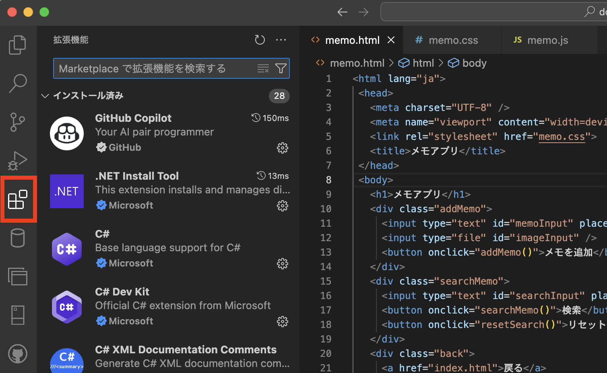
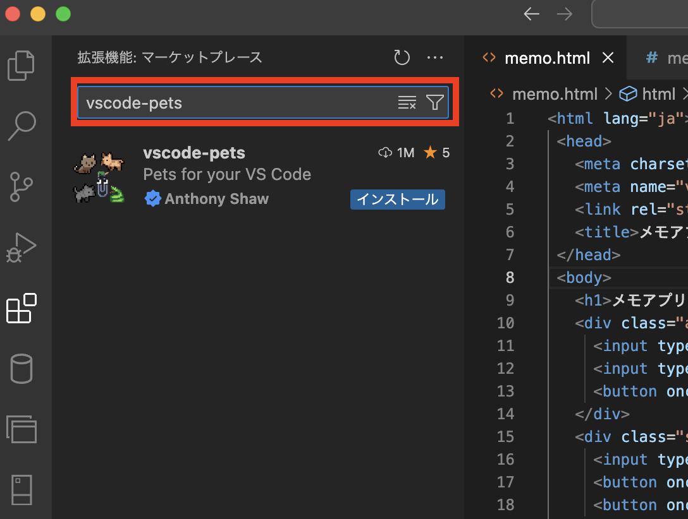
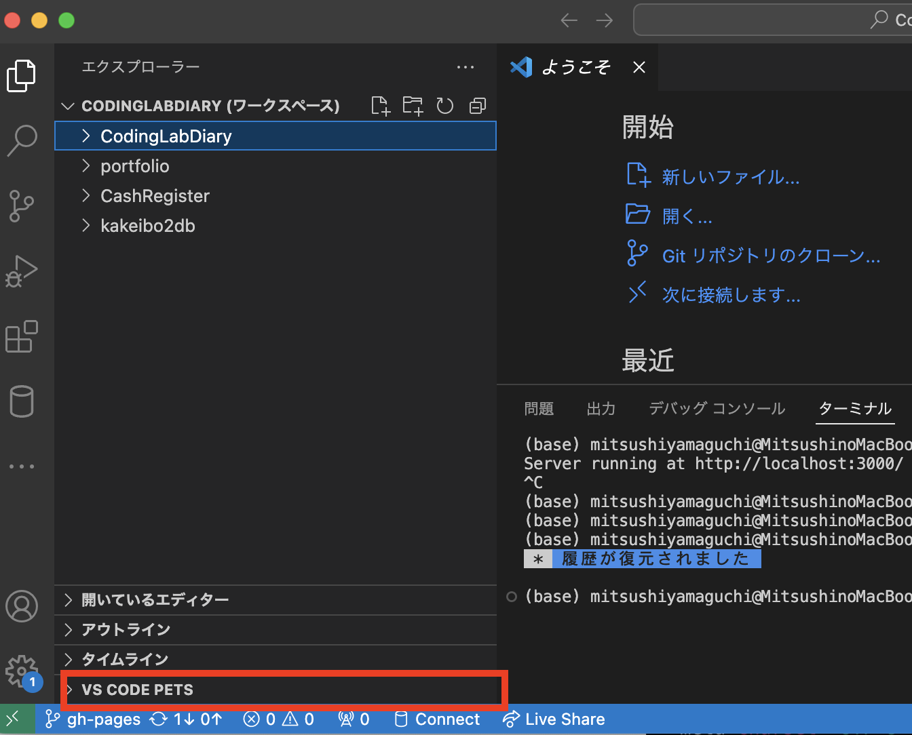
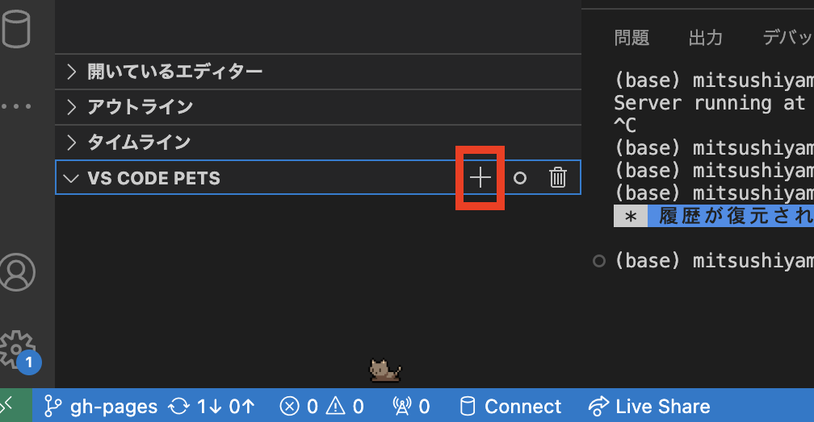
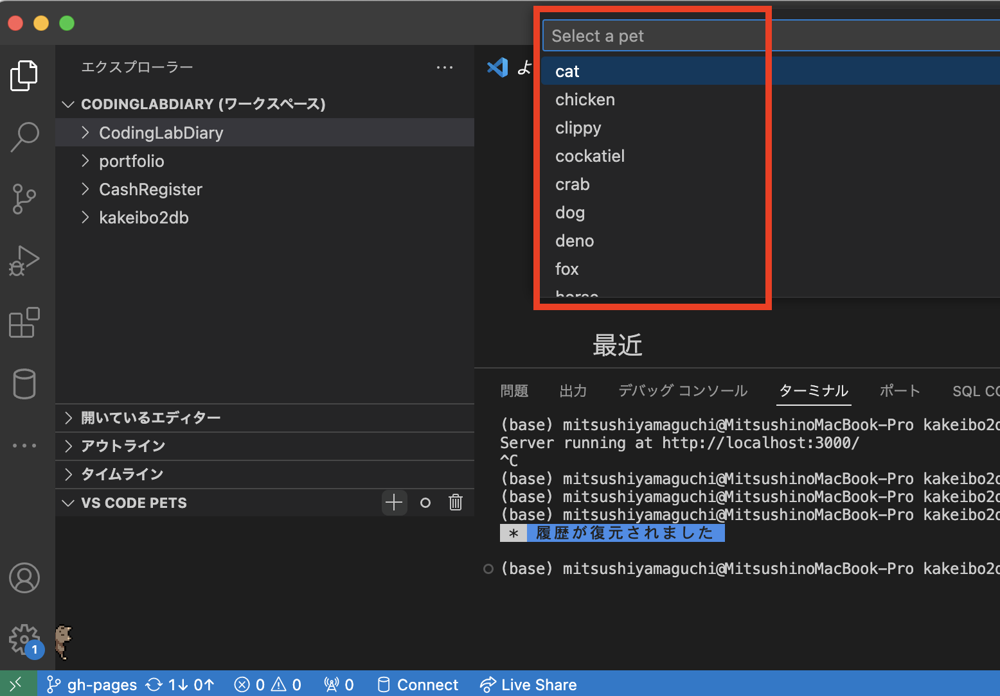
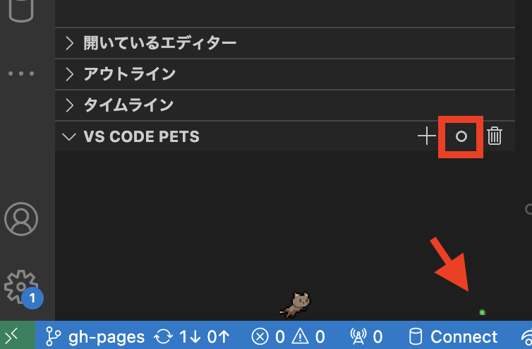
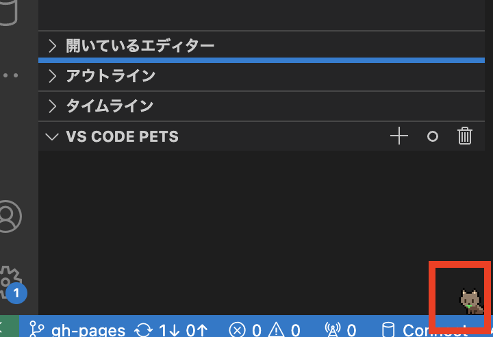
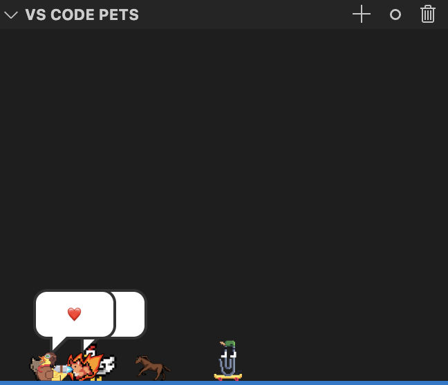

VSCodeでペットと過ごす - 2024/06/21 晴れ
文字と最低限のアイコンばかりでメカニカルな温かみの少ないVSCodeで、癒やしを得る拡張機能を見つけたのでご紹介です。
「vs-code-pets」。猫や犬から馬、亀などペットを追加できるものです。
 インストール方法は次の通りです。
インストール方法は次の通りです。
「vs-code-pets」。猫や犬から馬、亀などペットを追加できるものです。
-
VSCodeの拡張機能メニューを選択します

-
検索欄に「vscode-pets」と入力して検索し、インストールします

-
インストール完了後にエクスプローラーメニューを選ぶと「VS CODE PETS」が表示されているので選択します

-
プラスボタンを選択するとペットを選ぶことができます

-
表示される17種類のペットから好きな生き物を選びます

-
◯アイコンを選択するとボールが投げ込まれてペットが追いかけます

-
ペットがボールを加えてます

-
いっぱい追加すると少しうざいです...
